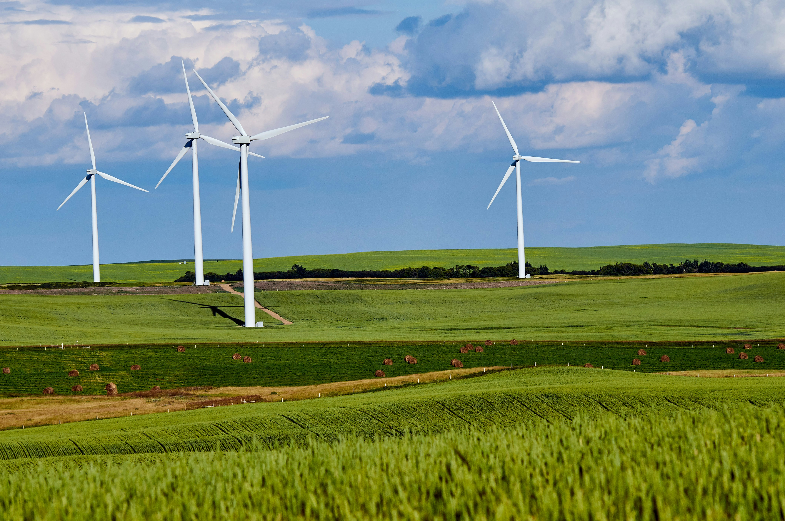
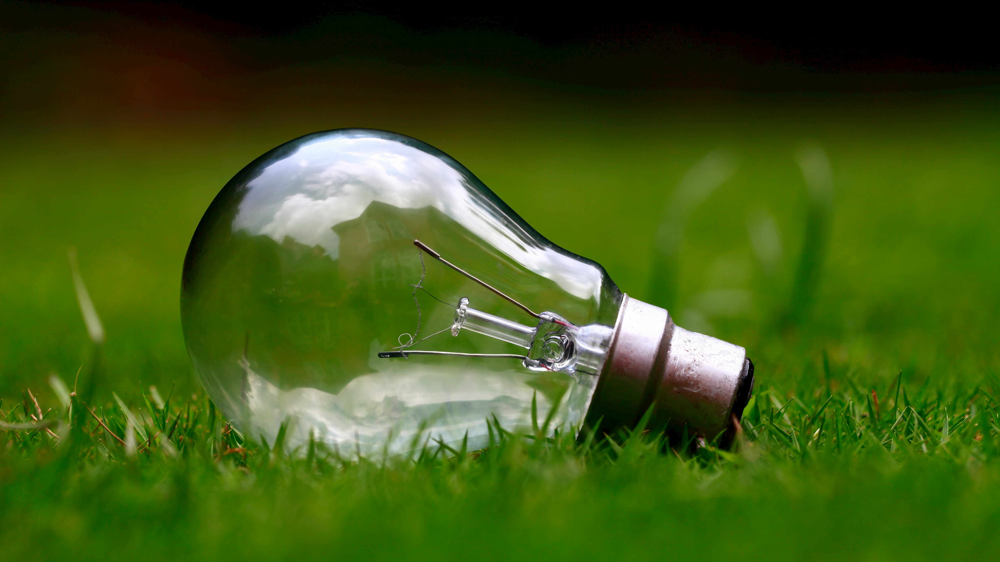

What is green energy?
Green energy refers to electricity generated from renewable sources like sunlight, wind, water, and geothermal heat. Unlike fossil fuels, green energy sources are abundant, sustainable, and produce minimal greenhouse gas emissions during power generation. Harnessing green energy is vital for reducing our reliance on finite resources and combating climate change.
Photo by Abby Anaday on Unsplash
Why choose green energy?
Choosing green energy offers a myriad of benefits, both for individuals and the environment. By opting for renewable sources like solar and wind power, we can significantly reduce our carbon footprint, improve air quality, and mitigate the adverse effects of climate change. Embracing green energy not only helps protect our planet but also promotes economic growth, job creation, and energy independence.

Photo by Andreas Gücklhorn on Unsplash
How do I change to green energy?
Transitioning to green energy involves various steps, starting with energy conservation and efficiency measures to reduce overall consumption. Individuals can then switch to renewable energy sources by installing solar panels, utilizing wind turbines, or opting for green energy plans offered by utility providers. Additionally, supporting policies and initiatives that promote clean energy development and investing in renewable energy technologies can accelerate the transition to a sustainable energy future.
Photo by Ashes Sitoula on Unsplash